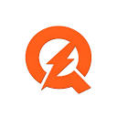

01 Getting and tracking leads
GoHighLevelCRM · The hub
Honestly, this is the one that holds the whole thing together. Every lead, chat, pipeline and follow up lives in one spot, so nobody ever gets forgotten. If you only fix one thing this year, make it a proper CRM. Start a free trial →
This is where most of our work comes from. Landing page form ads bring in the good ones, and the real trick is just being quick. Reply the second a lead lands, before they go cold on you.
Think of it as your free shopfront on Google and Maps. Cheapest marketing going, you just have to actually ask for the reviews.
02 Quoting, jobs and scheduling

QuotdAI quoting · done for youThe AI quoting system we use to get quotes out fast, priced the same every time and looking sharp. No more losing jobs because the quote took you three days. They build and run the whole setup for you. Get it for your business →
ServiceM8Job management
This is what turns a lead into an actual booked job. Quoting, scheduling, sending the crew out, job cards, site notes and invoices, all from your phone. Made for the people out doing the work. Start a free trial →
SafetyCultureChecklists · Forms
Quick safety checks and forms the crew fills in on their phone before they start. Keeps every job to the same standard and keeps you covered, no clipboards in sight. Great for grabbing before and afters too.
03 Money
XeroAccounting
Your books, sorted, without the shoebox of receipts. Reconciliation, GST and all the numbers your accountant keeps asking for. Job invoices land in here on their own. Set it up early and tax time stops being scary. Start a free trial →